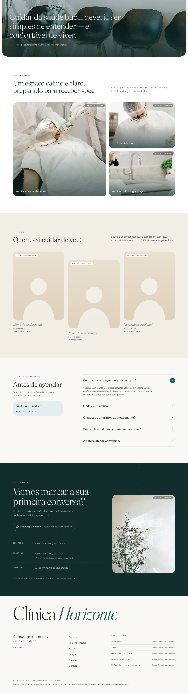

ClínicaHorizonte
Um site institucional para uma clínica odontológica fictícia: atendimento sem pressa, explicado com clareza, do primeiro clique à primeira consulta.

01 — Contexto e objetivo
Mostrar o que uma clínica pode ser na internet.
Muitas clínicas odontológicas dependem de indicação e de perfis em redes sociais, mas não têm um lugar próprio que explique com calma como funciona o atendimento.
A Clínica Horizonte é uma empresa fictícia criada para demonstrar, de ponta a ponta, um site profissional para esse segmento: apresentar serviços, explicar a primeira consulta, mostrar o espaço e facilitar o contato — sem prometer resultados nem inventar informações.
Clareza antes de tudo
Serviços, etapas e próximos passos em linguagem simples, para quem chega com dúvidas.
Acolhimento visual
Tons naturais, fotografia calma e muito respiro, para transmitir um ambiente tranquilo.
Contato sempre à mão
O agendamento aparece nos momentos certos da leitura, sem pressionar o visitante.
02 — Direção visual
Verde profundo, marfim e areia.
Uma serifa editorial de traço fino nos títulos, com itálico para dar calor, e uma sans neutra para leitura.
Cores amostradas das capturas do site.
03 — Galeria
Desktop e celular.
Capturas reais do site demonstrativo. As fotografias usadas nele são ilustrativas e sinalizadas como tal na própria página.


04 — Decisões de design
O que guiou cada escolha.
Honestidade visível
Uma faixa no topo avisa que é um projeto demonstrativo, e cada foto leva o selo “imagem ilustrativa”. O visitante nunca é enganado.
Equipe sem rostos inventados
A seção de equipe usa espaços reservados para foto, nome, especialidade e registro no CRO — prontos para os dados reais de cada clínica.
Primeira visita em três passos
Conversa inicial, avaliação clínica e plano explicado. Saber o que esperar reduz a ansiedade de quem ainda não conhece a clínica.
Ritmo entre claro e escuro
Seções em verde profundo intercaladas com marfim e areia criam pausas na leitura e destacam os momentos mais importantes.
05 — Interações e navegação
Simples de usar, agradável de explorar.
Lista de tratamentos que se expande no celular, com uma descrição curta e uma imagem de cada etapa.
Chamadas para agendar avaliação ao longo da página, sempre no mesmo estilo, fáceis de reconhecer.
Layout próprio para telas pequenas, com menu compacto e botões confortáveis para o toque.
Títulos grandes, parágrafos curtos e marcadores de etapa que guiam a rolagem.
06 — Tecnologia e links
Como foi construído.
Por enquanto, este é o único estudo de caso — o próximo pode ser o seu.